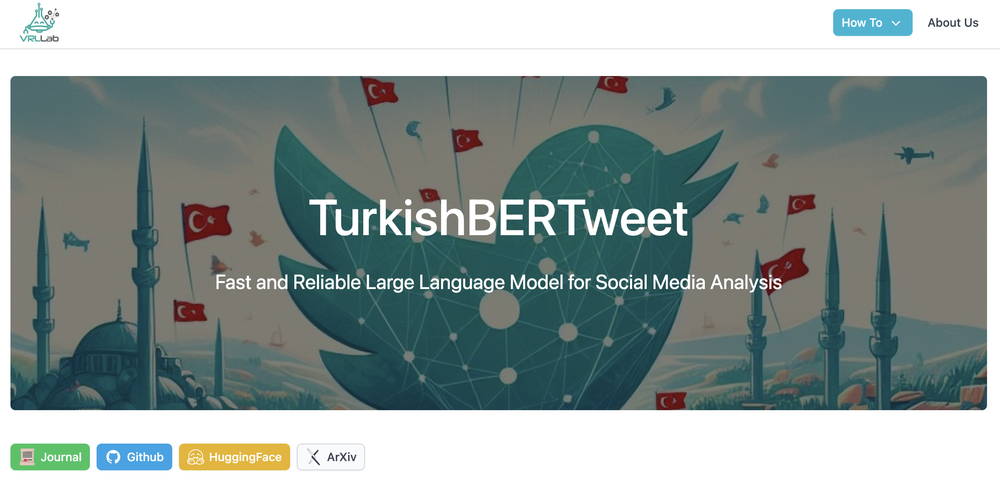
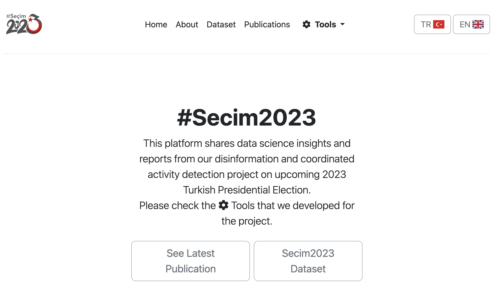
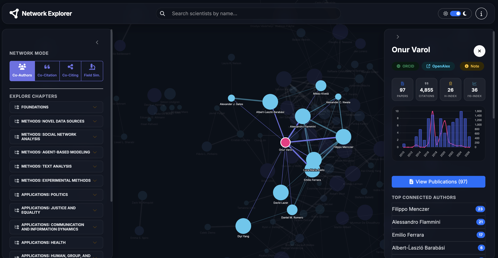

TurkishBERTweet is the first large-scale pre-trained language model specifically designed for Turkish social media. Built using over 894 million Turkish tweets, it shares the architecture of the RoBERTa-base model but is optimized for social media content. TurkishBERTweet excels in tasks like Sentiment Classification and Hate Speech Detection, offering better generalizability and lower inference times compared to existing models.
SMDT (Social Media Data Toolkit) is a comprehensive Python library designed to streamline the ingestion, standardization, and analysis of social media data. It provides a unified interface for handling data from diverse platforms, enabling researchers to focus on analysis rather than data wrangling.

This platform shares data science insights and reports from our disinformation and coordinated activity detection project on upcoming 2023 Turkish Presidential Election. The platform offers several interactive tools to invesitage anomalous followers and timeseries patterns.

This is a tool developed to visualize various academic networks. Core framework applied for different datasets and academic groups listed below.
🌐
Handbook of Computational Social Sciences
🌐
Science Academy BAGEP Awardees Network
🌐
Sosyal Veri Bilimi kitabı yazar ağı